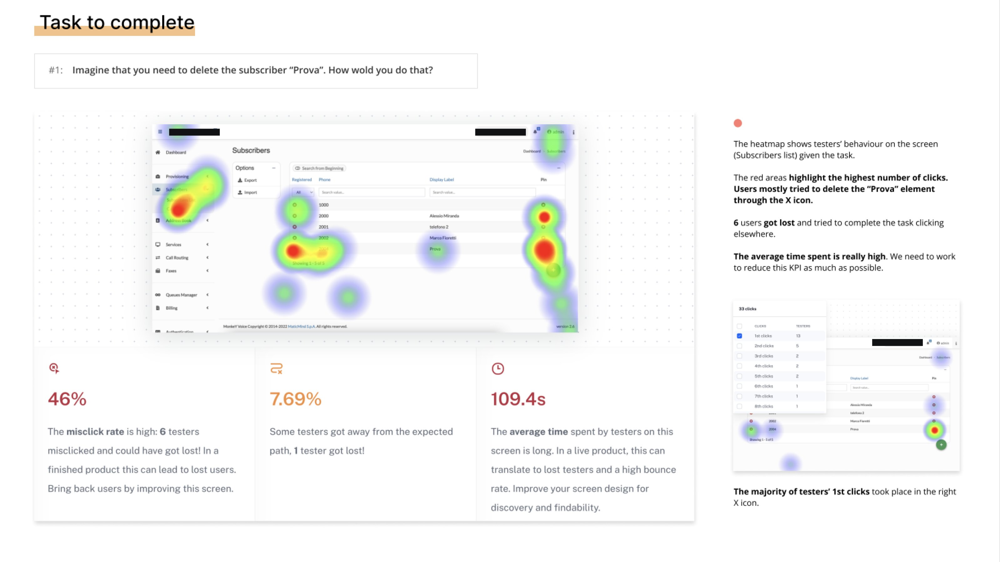

MonkeyVoice è una piattaforma VoIP B2B, adottata da realtà molto diverse tra loro — dalle banche alla pubblica amministrazione. Il cliente aveva bisogno di un restyle completo di UX e UI (con refactor del codice incluso).
La piattaforma esistente aveva un’architettura informativa caotica, flussi confusi e un look&feel datato. Il progetto era complesso: tanti stakeholder diversi, e sezioni molto tecniche da capire prima di poter intervenire.
 legacy ux/ui vs restyled experience
legacy ux/ui vs restyled experience
- Riduzione del time on task di circa il 45% per raggiungere le aree della piattaforma usate quotidianamente
- Calo del 29,5% dei ticket di supporto aperti dagli operatori per problemi di navigazione
- Le nuove feature (search bar + “Recent Activities”) sono state approvate e implementate, rispettando i vincoli tecnici sull’architettura informativa
- I wireframe della nuova struttura hanno richiesto solo modifiche minori dopo il primo round di test, segno che la direzione era solida dal primo giro
Sole UI/UX Designer sul progetto, dalla ricerca al prototipo hi-fi finale.
- Ho studiato la piattaforma esistente e la documentazione per entrare nel contesto tecnico
- Ho condotto interviste, survey, contextual inquiry da remoto con gli operatori e usability test sulla piattaforma esistente, organizzando script, risposte e registrazioni su Notion con un sistema di tag per gestire gli insight
- Ho fatto un’analisi euristica condivisa con il cliente, con una scala di priorità sui punti di intervento
- Ho lavorato su ideazione e brainstorming con il team di sviluppo, usando una priority matrix per validare la fattibilità delle idee in termini di tempo e budget
- Ho costruito i wireframe, testati con un primo round di usability test
- In parallelo, ho disegnato il nuovo design system della piattaforma — componenti, stili e pattern riutilizzabili su cui basare l’intero restyle
- Dopo la validazione, ho realizzato i prototipi hi-fi per l’approvazione finale del cliente e un secondo round di test con gli utenti
 iterare sulle soluzioni con il team di sviluppo
iterare sulle soluzioni con il team di sviluppo
Risolvere senza poter cambiare la causa
La ricerca aveva messo in luce un problema chiaro: gli utenti — sia nuovi che esperti — avevano un time on task molto alto per raggiungere le aree che usavano quotidianamente, a causa di un menu enorme e pieno di sotto-menu. Era un problema di architettura informativa.
Modificare l’architettura informativa, però, non era un’opzione: comportava implicazioni tecniche troppo importanti lato stakeholder.
Invece di insistere su una soluzione che avrebbe richiesto di intervenire su quel vincolo, ho lavorato con il team di sviluppo su un’alternativa che risolvesse il problema reale (raggiungere velocemente le aree usate di frequente) senza toccare la struttura: una search bar e un componente “Recent Activities”, entrambi validati positivamente nei test successivi.

usability test — heatmap e KPI sul task “elimina un subscriber”A volte la soluzione “giusta” sulla carta si scontra con vincoli reali non negoziabili, e la sfida diventa trovarne un’altra che risolva lo stesso bisogno.
I dati di ricerca sono stati comunque la base per orientare la nuova direzione — solo applicati a un perimetro diverso da quello che avrei scelto inizialmente.